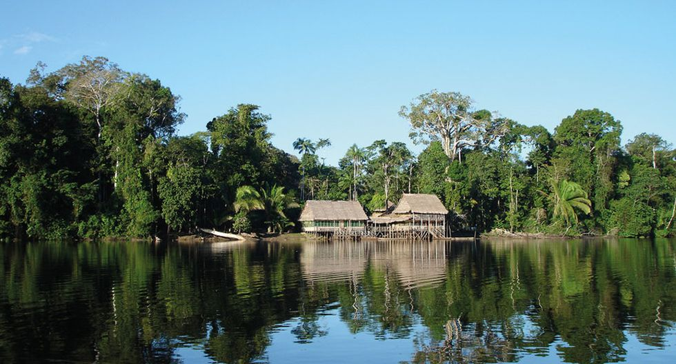

La Amazonía peruana conforma de por sí una región biogeográfica constituida por el bioma de selva lluviosa cuya vegetación representativa es el bosque denso siempreverde de hoja ancha y su clima es tropical húmedo. Bajo la división tradicional realizada por Javier Pulgar Vidal en 1938, la amazonía peruana está conformada por dos pisos altitudinales bien diferenciados: La Selva baja y la Selva alta.
